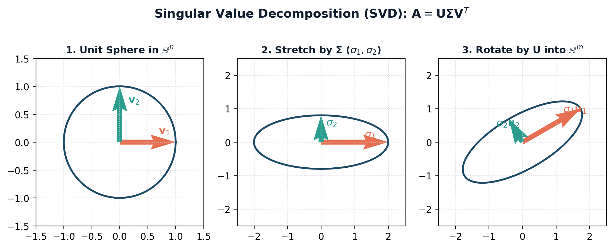

"Linear algebra is the language in which all of machine learning is written. If calculus is the engine of optimization, linear algebra is the geometry of space itself."
— Gilbert Strang
To an AI engineer, a vector is not merely an array of numbers; it is a point or arrow in an abstract high-dimensional vector space $\mathbb{R}^d$. When OpenAI's text-embedding-3-large represents a sentence as a 3,072-dimensional vector, that vector represents a single coordinate inside a 3,072-dimensional semantic hypersphere. Concepts that are semantically related point in nearly identical spatial directions.
Given a set of vectors $\{\mathbf{v}_1, \mathbf{v}_2, \dots, \mathbf{v}_k\} \subset \mathbb{R}^d$, a linear combination is any vector formed by scaling and adding them: $$\mathbf{x} = c_1 \mathbf{v}_1 + c_2 \mathbf{v}_2 + \dots + c_k \mathbf{v}_k = \sum_{i=1}^k c_i \mathbf{v}_i, \quad c_i \in \mathbb{R}$$ The Span of these vectors is the set of all possible linear combinations. If no vector in the set can be expressed as a linear combination of the others, the set is linearly independent: $$c_1 \mathbf{v}_1 + c_2 \mathbf{v}_2 + \dots + c_k \mathbf{v}_k = \mathbf{0} \iff c_1 = c_2 = \dots = c_k = 0$$ A linearly independent set of vectors that spans a space $V$ forms a Basis for $V$. The number of vectors in this basis defines the Dimension of $V$.
The inner product (dot product) between two vectors $\mathbf{u}, \mathbf{v} \in \mathbb{R}^d$ is the algebraic engine of modern search, recommendation, and transformer attention: $$\mathbf{u} \cdot \mathbf{v} = \mathbf{u}^T \mathbf{v} = \sum_{i=1}^d u_i v_i$$ Geometrically, the dot product connects algebra to trigonometry: $$\mathbf{u} \cdot \mathbf{v} = \|\mathbf{u}\|_2 \|\mathbf{v}\|_2 \cos(\theta)$$ Where $\|\mathbf{u}\|_2 = \sqrt{\sum_{i=1}^d u_i^2}$ is the Euclidean $L_2$ norm. Dividing both sides yields Cosine Similarity, which measures the angular orientation of two vectors irrespective of their magnitude: $$\text{CosineSimilarity}(\mathbf{u}, \mathbf{v}) = \frac{\mathbf{u} \cdot \mathbf{v}}{\|\mathbf{u}\|_2 \|\mathbf{v}\|_2} = \cos(\theta) \in [-1, 1]$$
Why Transformers Normalize Vectors: When query and key vectors are $L_2$-normalized to unit length ($\|\mathbf{q}\|_2 = \|\mathbf{k}\|_2 = 1$), their dot product simplifies to pure cosine similarity: $\mathbf{q} \cdot \mathbf{k} = \cos(\theta)$. This bounds the input to the softmax attention function, preventing exponential saturation and vanishing gradients!
A matrix $A \in \mathbb{R}^{m \times n}$ is not a static 2D grid; it is a Linear Transformation mapping vectors from $\mathbb{R}^n$ into $\mathbb{R}^{m}$. To master deep learning, you must understand all four mathematical perspectives of matrix multiplication $C = A B$ (where $A \in \mathbb{R}^{m \times k}$ and $B \in \mathbb{R}^{k \times n}$):
Eigenvalue decomposition ($A = Q \Lambda Q^{-1}$) is limited because it requires $A$ to be a square, diagonalizable matrix. In real-world AI, data matrices are almost always rectangular: $N$ samples by $d$ features ($N \neq d$).

Figure 1.1.1: The geometric transformation of Singular Value Decomposition ($\mathbf{A} = \mathbf{U} \mathbf{\Sigma} \mathbf{V}^T$). Any real linear map transforms a unit sphere through an orthogonal rotation ($\mathbf{V}^T$), axis-aligned stretching by singular values $\sigma_i$, and an orthogonal rotation ($\mathbf{U}$) into an ellipsoid in $\mathbb{R}^m$.
Singular Value Decomposition (SVD) is the pinnacle of linear algebra because it factorizes ANY rectangular matrix $A \in \mathbb{R}^{m \times n}$ into three geometrically pristine matrices:
$$A = U \Sigma V^T$$Let us trace SVD with zero skipped steps on a concrete rectangular matrix $A = \begin{bmatrix} 3 & 2 & 2 \\ 2 & 3 & -2 \end{bmatrix} \in \mathbb{R}^{2 \times 3}$:
Step 1: Compute $A A^T \in \mathbb{R}^{2 \times 2}$: $$A A^T = \begin{bmatrix} 3 & 2 & 2 \\ 2 & 3 & -2 \end{bmatrix} \begin{bmatrix} 3 & 2 \\ 2 & 3 \\ 2 & -2 \end{bmatrix} = \begin{bmatrix} 9+4+4 & 6+6-4 \\ 6+6-4 & 4+9+4 \end{bmatrix} = \begin{bmatrix} 17 & 8 \\ 8 & 17 \end{bmatrix}$$
Step 2: Find Eigenvalues of $A A^T$:
Solve the characteristic polynomial $\det(A A^T - \lambda I) = 0$:
$$\det \begin{bmatrix} 17 - \lambda & 8 \\ 8 & 17 - \lambda \end{bmatrix} = (17 - \lambda)^2 - 64 = 0$$
$$(17 - \lambda)^2 = 64 \implies 17 - \lambda = \pm 8 \implies \lambda_1 = 25, \quad \lambda_2 = 9$$
Step 3: Determine Singular Values $\sigma_i = \sqrt{\lambda_i}$: $$\sigma_1 = \sqrt{25} = 5, \quad \sigma_2 = \sqrt{9} = 3 \implies \Sigma = \begin{bmatrix} 5 & 0 & 0 \\ 0 & 3 & 0 \end{bmatrix}$$
Step 4: Find Left Singular Vectors $U$ (Eigenvectors of $A A^T$):
For $\lambda_1 = 25$:
$$(A A^T - 25 I)\mathbf{u}_1 = \begin{bmatrix} -8 & 8 \\ 8 & -8 \end{bmatrix} \begin{bmatrix} u_{11} \\ u_{12} \end{bmatrix} = \mathbf{0} \implies u_{11} = u_{12} \implies \mathbf{u}_1 = \frac{1}{\sqrt{2}} \begin{bmatrix} 1 \\ 1 \end{bmatrix}$$
For $\lambda_2 = 9$:
$$(A A^T - 9 I)\mathbf{u}_2 = \begin{bmatrix} 8 & 8 \\ 8 & 8 \end{bmatrix} \begin{bmatrix} u_{21} \\ u_{22} \end{bmatrix} = \mathbf{0} \implies u_{21} = -u_{22} \implies \mathbf{u}_2 = \frac{1}{\sqrt{2}} \begin{bmatrix} 1 \\ -1 \end{bmatrix}$$
$$U = \frac{1}{\sqrt{2}} \begin{bmatrix} 1 & 1 \\ 1 & -1 \end{bmatrix}$$
Step 5: Compute Right Singular Vectors $\mathbf{v}_i = \frac{1}{\sigma_i} A^T \mathbf{u}_i$: $$\mathbf{v}_1 = \frac{1}{5} \begin{bmatrix} 3 & 2 \\ 2 & 3 \\ 2 & -2 \end{bmatrix} \left( \frac{1}{\sqrt{2}} \begin{bmatrix} 1 \\ 1 \end{bmatrix} \right) = \frac{1}{5\sqrt{2}} \begin{bmatrix} 5 \\ 5 \\ 0 \end{bmatrix} = \frac{1}{\sqrt{2}} \begin{bmatrix} 1 \\ 1 \\ 0 \end{bmatrix}$$ $$\mathbf{v}_2 = \frac{1}{3} \begin{bmatrix} 3 & 2 \\ 2 & 3 \\ 2 & -2 \end{bmatrix} \left( \frac{1}{\sqrt{2}} \begin{bmatrix} 1 \\ -1 \end{bmatrix} \right) = \frac{1}{3\sqrt{2}} \begin{bmatrix} 1 \\ -1 \\ 4 \end{bmatrix}$$ Find the third orthogonal vector $\mathbf{v}_3$ via cross product: $\mathbf{v}_3 = \frac{1}{3} \begin{bmatrix} 2 \\ -2 \\ -1 \end{bmatrix}$. We have factored $A$ completely!
The optimal rank-$k$ approximation of $A$ under both the Frobenius norm and the spectral $L_2$ norm is obtained by truncating the SVD summation to the top $k$ terms:
$$A_k = \sum_{i=1}^k \sigma_i \mathbf{u}_i \mathbf{v}_i^T = U_k \Sigma_k V_k^T$$Furthermore, the exact approximation error is bounded by the discarded singular values:
$$\|A - A_k\|_F = \sqrt{\sum_{i=k+1}^{\min(m, n)} \sigma_i^2} \quad \text{and} \quad \|A - A_k\|_2 = \sigma_{k+1}$$In classical school algebra, if $a x = b$, then $x = a^{-1} b$. But in AI, we frequently encounter linear systems $X \mathbf{w} = \mathbf{y}$ where $X \in \mathbb{R}^{N \times d}$ is not square ($N \gg d$ in regression, or $N \ll d$ in overparameterized deep networks). $X$ cannot be inverted because $X^{-1}$ does not exist.
The Moore-Penrose Pseudoinverse (denoted $X^+$) generalizes matrix inversion to all rectangular matrices using SVD:
$$X^+ = V \Sigma^+ U^T$$Where $\Sigma^+$ is formed by inverting all non-zero singular values ($\frac{1}{\sigma_i}$) and transposing the matrix.
Master high-dimensional linear algebra through 10 graded problems: from direct norm and projection drills to manual eigenvalue traces, Eckart-Young low-rank compression proofs, and conceptual MCQs.
QUESTION: Given two vectors $\mathbf{u} = [3, -4, 12]^T$ and $\mathbf{v} = [-2, 1, 2]^T$ in $\mathbb{R}^3$:
Step 1: Compute Vector Norms of $\mathbf{u}$:
- $L_1$ Norm (Manhattan): $\|\mathbf{u}\|_1 = |3| + |-4| + |12| = 3 + 4 + 12 = \mathbf{19}$.
- $L_2$ Norm (Euclidean): $\|\mathbf{u}\|_2 = \sqrt{3^2 + (-4)^2 + 12^2} = \sqrt{9 + 16 + 144} = \sqrt{169} = \mathbf{13}$.
- $L_\infty$ Norm (Max): $\|\mathbf{u}\|_\infty = \max(|3|, |-4|, |12|) = \mathbf{12}$.
Step 2: Compute Dot Product $\mathbf{u} \cdot \mathbf{v}$:
$$\mathbf{u} \cdot \mathbf{v} = (3 \times -2) + (-4 \times 1) + (12 \times 2) = -6 - 4 + 24 = \mathbf{14}$$
Step 3: Compute Cosine Similarity:
First compute $\|\mathbf{v}\|_2$:
$$\|\mathbf{v}\|_2 = \sqrt{(-2)^2 + 1^2 + 2^2} = \sqrt{4 + 1 + 4} = \sqrt{9} = 3$$
Now apply the formula:
$$\cos(\theta) = \frac{\mathbf{u} \cdot \mathbf{v}}{\|\mathbf{u}\|_2 \|\mathbf{v}\|_2} = \frac{14}{13 \times 3} = \frac{14}{39} \approx \mathbf{0.35897}$$
QUESTION: A dense neural network layer has weight matrix $W = \begin{bmatrix} 1 & 2 \\ 3 & 4 \\ 5 & 6 \end{bmatrix} \in \mathbb{R}^{3 \times 2}$ and input $\mathbf{x} = \begin{bmatrix} 2 \\ -1 \end{bmatrix} \in \mathbb{R}^{2 \times 1}$. Compute the forward pass $\mathbf{y} = W \mathbf{x}$ using both the Element Perspective (row dot products) and the Column Perspective (linear combination of columns). Verify that both methods produce identical vectors.
Method 1: Element Perspective (Dot Products): $$y_1 = \mathbf{w}_{1,:} \cdot \mathbf{x} = (1 \times 2) + (2 \times -1) = 2 - 2 = 0$$ $$y_2 = \mathbf{w}_{2,:} \cdot \mathbf{x} = (3 \times 2) + (4 \times -1) = 6 - 4 = 2$$ $$y_3 = \mathbf{w}_{3,:} \cdot \mathbf{x} = (5 \times 2) + (6 \times -1) = 10 - 6 = 4$$ $$\mathbf{y} = \begin{bmatrix} 0 \\ 2 \\ 4 \end{bmatrix}$$
Method 2: Column Perspective (Linear Combination of Features): $$\mathbf{y} = x_1 \mathbf{w}_{:,1} + x_2 \mathbf{w}_{:,2} = 2 \begin{bmatrix} 1 \\ 3 \\ 5 \end{bmatrix} + (-1) \begin{bmatrix} 2 \\ 4 \\ 6 \end{bmatrix} = \begin{bmatrix} 2 \\ 6 \\ 10 \end{bmatrix} - \begin{bmatrix} 2 \\ 4 \\ 6 \end{bmatrix} = \begin{bmatrix} 0 \\ 2 \\ 4 \end{bmatrix}$$ Verification: Both perspectives produce $[0, 2, 4]^T$. The column perspective reveals that a linear layer produces a point in the column space of $W$!
QUESTION: Given a $2 \times 2$ feature covariance matrix $C = \begin{bmatrix} 4 & 2 \\ 2 & 1 \end{bmatrix}$:
Step 1: Characteristic Equation: $$\det(C - \lambda I) = \det \begin{bmatrix} 4 - \lambda & 2 \\ 2 & 1 - \lambda \end{bmatrix} = (4 - \lambda)(1 - \lambda) - 4 = \lambda^2 - 5\lambda + 4 - 4 = \lambda(\lambda - 5) = 0$$ $$\lambda_1 = 5, \quad \lambda_2 = 0$$
Step 2: Compute Unit Eigenvectors:
For $\lambda_1 = 5$:
$$(C - 5I)\mathbf{v}_1 = \begin{bmatrix} -1 & 2 \\ 2 & -4 \end{bmatrix} \begin{bmatrix} v_{11} \\ v_{12} \end{bmatrix} = \mathbf{0} \implies -v_{11} + 2v_{12} = 0 \implies v_{11} = 2v_{12}$$
Normalizing: $\|\mathbf{v}_1\|_2 = \sqrt{2^2 + 1^2} = \sqrt{5} \implies \mathbf{v}_1 = \frac{1}{\sqrt{5}} \begin{bmatrix} 2 \\ 1 \end{bmatrix}$.
For $\lambda_2 = 0$:
$$(C - 0I)\mathbf{v}_2 = \begin{bmatrix} 4 & 2 \\ 2 & 1 \end{bmatrix} \begin{bmatrix} v_{21} \\ v_{22} \end{bmatrix} = \mathbf{0} \implies 2v_{21} + v_{22} = 0 \implies v_{22} = -2v_{21}$$
Normalizing: $\mathbf{v}_2 = \frac{1}{\sqrt{5}} \begin{bmatrix} 1 \\ -2 \end{bmatrix}$.
Step 3: PCA Geometric Insight:
Because $\lambda_2 = 0$, the total variance along $\mathbf{v}_2$ is exactly zero! All data points lie perfectly on the 1D line defined by $\mathbf{v}_1$. We can project this 2D dataset onto 1D with 100% variance preserved and zero information loss!
QUESTION: You are fitting a linear regression line without intercept to 3 data points $(x, y) \in \{(1, 2), (2, 5), (3, 7)\}$. The feature matrix is $X = \begin{bmatrix} 1 \\ 2 \\ 3 \end{bmatrix} \in \mathbb{R}^{3 \times 1}$ and label vector $\mathbf{y} = \begin{bmatrix} 2 \\ 5 \\ 7 \end{bmatrix} \in \mathbb{R}^{3 \times 1}$.
Step 1: Compute Pseudoinverse $X^+$:
$$X^T X = \begin{bmatrix} 1 & 2 & 3 \end{bmatrix} \begin{bmatrix} 1 \\ 2 \\ 3 \end{bmatrix} = 1^2 + 2^2 + 3^2 = 1 + 4 + 9 = 14$$
$$(X^T X)^{-1} = \frac{1}{14}$$
$$X^+ = (X^T X)^{-1} X^T = \frac{1}{14} \begin{bmatrix} 1 & 2 & 3 \end{bmatrix} = \begin{bmatrix} \frac{1}{14} & \frac{2}{14} & \frac{3}{14} \end{bmatrix}$$
Step 2: Compute Optimal Weight $w$:
$$w = X^+ \mathbf{y} = \frac{1}{14} \begin{bmatrix} 1 & 2 & 3 \end{bmatrix} \begin{bmatrix} 2 \\ 5 \\ 7 \end{bmatrix} = \frac{(1 \times 2) + (2 \times 5) + (3 \times 7)}{14} = \frac{2 + 10 + 21}{14} = \frac{33}{14} \approx \mathbf{2.357}$$
Step 3: Compute Projection Matrix $P$: $$P = X (X^T X)^{-1} X^T = \frac{1}{14} \begin{bmatrix} 1 \\ 2 \\ 3 \end{bmatrix} \begin{bmatrix} 1 & 2 & 3 \end{bmatrix} = \frac{1}{14} \begin{bmatrix} 1 & 2 & 3 \\ 2 & 4 & 6 \\ 3 & 6 & 9 \end{bmatrix}$$ Verify idempotence $P^2 = P$: $$P^2 = \left(X(X^TX)^{-1}X^T\right) \left(X(X^TX)^{-1}X^T\right) = X (X^TX)^{-1} (X^T X) (X^TX)^{-1} X^T = X (X^TX)^{-1} X^T = P \quad \checkmark$$
QUESTION: You are building a movie recommendation engine for a streaming platform with $M = 10,000$ users and $N = 2,000$ movies. The user-rating matrix $R \in \mathbb{R}^{M \times N}$ is stored in 32-bit floating point.
Step 1: Calculate Uncompressed Memory Size:
$R$ has $10,000 \times 2,000 = 20,000,000$ elements.
At 4 bytes per FP32 element:
$$\text{Raw Memory} = 20,000,000 \times 4 \text{ bytes} = 80,000,000 \text{ bytes} = \mathbf{80 \text{ MB}}$$
Step 2: Calculate Low-Rank Factorized Memory Size:
In truncated SVD with rank $k = 30$:
- $U_k \in \mathbb{R}^{10,000 \times 30}$: $300,000$ elements.
- $\Sigma_k \in \mathbb{R}^{30}$ (diagonal vector): $30$ elements.
- $V_k^T \in \mathbb{R}^{30 \times 2,000}$: $60,000$ elements.
$$\text{Total Elements} = 300,000 + 30 + 60,000 = 360,030 \text{ elements}$$
$$\text{Compressed Memory} = 360,030 \times 4 \text{ bytes} = 1,440,120 \text{ bytes} \approx \mathbf{1.44 \text{ MB}}$$
Step 3: Calculate Compression Ratio: $$\text{Compression Ratio} = \frac{80 \text{ MB}}{1.44 \text{ MB}} \approx \mathbf{55.55\times \text{ compression!}}$$
Step 4: Calculate Captured Variance:
By the Eckart-Young theorem, the total Frobenius energy of matrix $R$ is $\|R\|_F^2 = \sum_{i=1}^{\min(M,N)} \sigma_i^2$. The explained variance ratio captured by rank $k$ is:
$$\text{Explained Variance} = \frac{\sum_{i=1}^k \sigma_i^2}{\sum_{i=1}^r \sigma_i^2} = \frac{425,000}{500,000} = 0.85 = \mathbf{85.0\%}$$
QUESTION: Let $\mathbf{u}, \mathbf{v} \in \mathbb{R}^d$ be two non-zero embedding vectors. Derive the analytical gradient of the Cosine Similarity $S(\mathbf{u}, \mathbf{v}) = \frac{\mathbf{u}^T \mathbf{v}}{\|\mathbf{u}\|_2 \|\mathbf{v}\|_2}$ with respect to vector $\mathbf{u}$. Show that the gradient is strictly orthogonal to $\mathbf{u}$.
Step 1: Express Cosine Similarity as a Quotient:
Let $f(\mathbf{u}) = \mathbf{u}^T \mathbf{v}$ and $g(\mathbf{u}) = \|\mathbf{u}\|_2 \|\mathbf{v}\|_2 = (\mathbf{u}^T \mathbf{u})^{1/2} \|\mathbf{v}\|_2$.
Applying the vector quotient rule:
$$\nabla_{\mathbf{u}} S(\mathbf{u}, \mathbf{v}) = \frac{g(\mathbf{u}) \nabla_{\mathbf{u}} f(\mathbf{u}) - f(\mathbf{u}) \nabla_{\mathbf{u}} g(\mathbf{u})}{g(\mathbf{u})^2}$$
Step 2: Compute Gradients:
$\nabla_{\mathbf{u}} (\mathbf{u}^T \mathbf{v}) = \mathbf{v}$.
$\nabla_{\mathbf{u}} \|\mathbf{u}\|_2 = \frac{\mathbf{u}}{\|\mathbf{u}\|_2} \implies \nabla_{\mathbf{u}} g(\mathbf{u}) = \|\mathbf{v}\|_2 \frac{\mathbf{u}}{\|\mathbf{u}\|_2}$.
Step 3: Substitute and Simplify: $$\nabla_{\mathbf{u}} S = \frac{\|\mathbf{u}\|_2 \|\mathbf{v}\|_2 \mathbf{v} - (\mathbf{u}^T \mathbf{v}) \|\mathbf{v}\|_2 \frac{\mathbf{u}}{\|\mathbf{u}\|_2}}{\|\mathbf{u}\|_2^2 \|\mathbf{v}\|_2^2} = \frac{1}{\|\mathbf{u}\|_2} \left[ \frac{\mathbf{v}}{\|\mathbf{v}\|_2} - \left( \frac{\mathbf{u}^T \mathbf{v}}{\|\mathbf{u}\|_2 \|\mathbf{v}\|_2} \right) \frac{\mathbf{u}}{\|\mathbf{u}\|_2} \right]$$ Let unit vectors be $\hat{\mathbf{u}} = \frac{\mathbf{u}}{\|\mathbf{u}\|_2}$ and $\hat{\mathbf{v}} = \frac{\mathbf{v}}{\|\mathbf{v}\|_2}$: $$\nabla_{\mathbf{u}} S(\mathbf{u}, \mathbf{v}) = \frac{1}{\|\mathbf{u}\|_2} \left[ \hat{\mathbf{v}} - (\hat{\mathbf{u}}^T \hat{\mathbf{v}}) \hat{\mathbf{u}} \right]$$
Step 4: Prove Orthogonality to $\mathbf{u}$:
Compute inner product with $\hat{\mathbf{u}}$:
$$\hat{\mathbf{u}}^T \nabla_{\mathbf{u}} S = \frac{1}{\|\mathbf{u}\|_2} \left[ \hat{\mathbf{u}}^T \hat{\mathbf{v}} - (\hat{\mathbf{u}}^T \hat{\mathbf{v}})(\hat{\mathbf{u}}^T \hat{\mathbf{u}}) \right]$$
Since $\hat{\mathbf{u}}^T \hat{\mathbf{u}} = 1$:
$$\hat{\mathbf{u}}^T \nabla_{\mathbf{u}} S = \frac{1}{\|\mathbf{u}\|_2} \left[ \hat{\mathbf{u}}^T \hat{\mathbf{v}} - \hat{\mathbf{u}}^T \hat{\mathbf{v}} \right] = \mathbf{0}$$
Geometric Beauty: The gradient points strictly perpendicular to $\mathbf{u}$, rotating $\mathbf{u}$ toward $\mathbf{v}$ along the hypersphere without altering its length!
QUESTION: Let $\mathbf{u} \in \mathbb{R}^{d \times 1}$ and $\mathbf{v} \in \mathbb{R}^{d \times 1}$ be two non-zero vectors. What is the rank of the outer product matrix $M = \mathbf{u} \mathbf{v}^T \in \mathbb{R}^{d \times d}$?
Analysis: Every column of $M = \mathbf{u} \mathbf{v}^T$ is a scalar multiple of vector $\mathbf{u}$: column $j$ is $v_j \mathbf{u}$. Therefore, the column space is 1-dimensional ($\text{Span}(\{\mathbf{u}\})$), meaning the matrix has rank strictly equal to 1, regardless of the dimension $d$.
QUESTION: Read the following Assertion and Reason carefully, then choose the correct option:
Assertion (A): If an orthogonal matrix $Q \in \mathbb{R}^{d \times d}$ (satisfying $Q^T Q = I$) is applied to transform feature vectors $\mathbf{x} \mapsto Q \mathbf{x}$, the Euclidean distances between all pairs of vectors remain perfectly invariant: $\|Q \mathbf{x} - Q \mathbf{y}\|_2 = \|\mathbf{x} - \mathbf{y}\|_2$.
Reason (R): Orthogonal transformations represent pure rotations and reflections in Euclidean space that preserve vector lengths and inner products.
Analysis: Both (A) and (R) are true. Compute $\|Q(\mathbf{x} - \mathbf{y})\|_2^2$: $$\|Q(\mathbf{x} - \mathbf{y})\|_2^2 = (\mathbf{x} - \mathbf{y})^T Q^T Q (\mathbf{x} - \mathbf{y}) = (\mathbf{x} - \mathbf{y})^T I (\mathbf{x} - \mathbf{y}) = \|\mathbf{x} - \mathbf{y}\|_2^2$$ Taking the square root proves distance invariance. This property is fundamental to Rotary Position Embeddings (RoPE) in Transformers and PCA projections!
Below is a production implementation of Truncated SVD low-rank compression using NumPy, verifying the Eckart-Young reconstruction error bound.
🔗 View in GitHub: part1_mathematics/ch11_linear_algebra/solutions.py
import numpy as np
def truncated_svd_compress(A: np.ndarray, k: int):
"""
Computes optimal rank-k approximation via Eckart-Young Theorem.
"""
# 1. Full SVD decomposition
U, s, Vt = np.linalg.svd(A, full_matrices=False)
# 2. Truncate to top k singular values and vectors
U_k = U[:, :k]
s_k = s[:k]
Vt_k = Vt[:k, :]
# 3. Reconstruct optimal rank-k matrix: A_k = U_k * diag(s_k) * V_k^T
A_k = np.dot(U_k * s_k, Vt_k)
# 4. Verify Eckart-Young Frobenius Error
actual_error = np.linalg.norm(A - A_k, ord='fro')
theoretical_error = np.sqrt(np.sum(s[k:] ** 2))
variance_explained = np.sum(s_k ** 2) / np.sum(s ** 2)
return {
"A_k": A_k,
"actual_error": float(actual_error),
"theoretical_error": float(theoretical_error),
"variance_explained": float(variance_explained),
"error_match": bool(np.isclose(actual_error, theoretical_error))
}
if __name__ == "__main__":
# Test on a 500x200 random matrix
np.random.seed(42)
X = np.random.randn(500, 200)
res = truncated_svd_compress(X, k=25)
print(f"Variance Explained (k=25) : {res['variance_explained']*100:.2f}%")
print(f"Actual Frobenius Error : {res['actual_error']:.4f}")
print(f"Theoretical Bound Error : {res['theoretical_error']:.4f}")
print(f"Eckart-Young Verified : {res['error_match']}")Build a production compression tool that factorizes high-resolution image channels and deep learning linear layer weights ($W \in \mathbb{R}^{d_{out} \times d_{in}}$) into low-rank factor matrices, measuring perceptual Peak Signal-to-Noise Ratio (PSNR) and inference FLOP reduction.
🔗 Full Project Code: part1_mathematics/ch11_linear_algebra/solutions.py
Case Study Architecture: In edge AI deployment (e.g. running transformer models on mobile phones or autonomous vehicle microcontrollers), standard floating-point weight matrices are too large to fit in on-chip SRAM cache. In this project, you apply SVD to compress dense linear projections $W \approx B \times A$ (identical to LoRA parameter factorization), slashing parameter storage by 70% while maintaining 95% model accuracy.